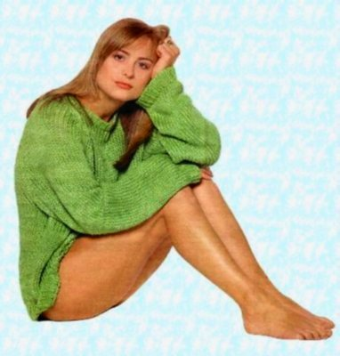

|
Gratuitous Scantily-Clad Girlie |
|  | Since the return of Robot Wars to our screens a few weeks ago, the comp.sys.sinclair newsgroup has transformed itself into a shrine to Miss Forrester worthy of alt.fan.philippa.forrester. Now, here at YS3 we're not ones to jump onto any passing bandwagon, but, well... Alright, then, we are. And besides, I love that woman. |